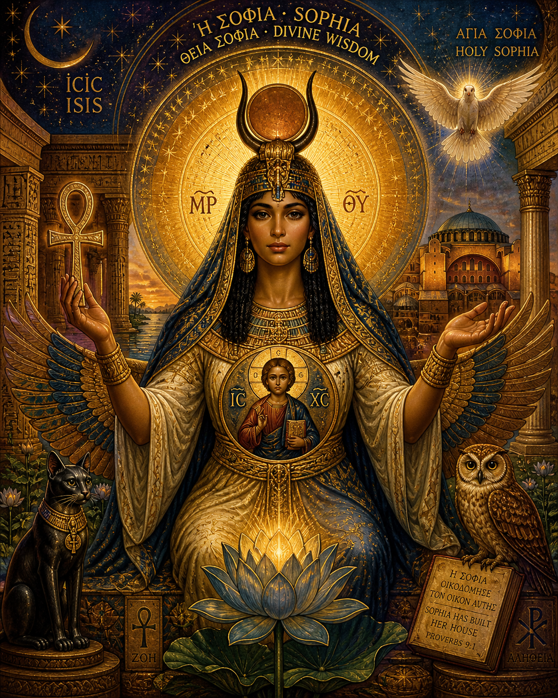

Isis-Sophia
Throne of Wisdom, Lady of All
Key Inscriptions
[PLACEHOLDER — Mark to complete: First key inscription from the image]
— [Source]
[PLACEHOLDER — Mark to complete: Second key inscription]
— [Source]
[PLACEHOLDER — Mark to complete: Third key inscription]
— [Source]
How This Figure Appeared
[PLACEHOLDER — Mark to complete: Personal narrative of how Isis-Sophia entered the constellation.]
Archetypal Function
[PLACEHOLDER — Mark to complete: What Isis-Sophia represents — the great feminine as wisdom, ground, and throne of the sacred.]
The Shadow Forms
[PLACEHOLDER — Mark to complete: The unintegrated expressions of this figure — where the wisdom becomes suffocation, the nurture becomes possession.]
Integration
[PLACEHOLDER — Mark to complete: What Isis-Sophia contributes to the whole — the grounding feminine wisdom without which the fire figures consume rather than illuminate.]
Symbolic Vocabulary
Wings
[PLACEHOLDER — Brief gloss]
Ankh
[PLACEHOLDER — Brief gloss]
Sirius
[PLACEHOLDER — Brief gloss]
Throne
[PLACEHOLDER — Brief gloss]
Within the Constellation
Most closely related to: